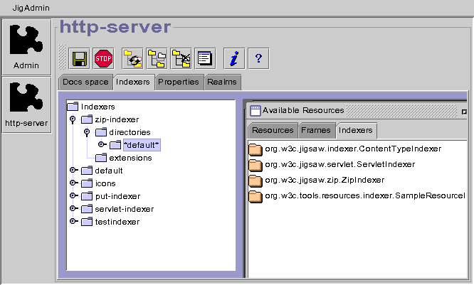
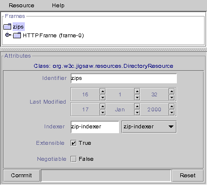
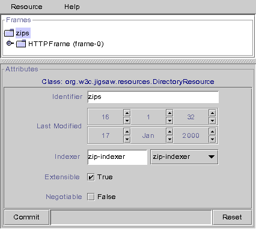

Introduction
Yes,
Jigsaw allows you to browse the content of any zip file, that
could be done with a set of resources and frames and by configuring a special
indexer. Actually, you need to create a
ZipDirectoryResource
associated to a
ZipFrame.
This
ZipDirectoryResource must be associated with a special indexer
named
zip-indexer (org.w3c.jigsaw.zip.ZipIndexer) in this sample
configuration.
Configuring the zip indexer
First, read the
indexer documentation (if your
not aware of that kind of
Jigsaw feature).
In order to be able to browse a zip file, you need to define the way
Jigsaw will index the files (or directories) found in this zip file.
This could be done by creating a specific indexer. The ZipIndexer
(org.w3c.jigsaw.zip.ZipIndexer) must be configured like any other
indexer, except that usuals resources classes must be replaced like that:
-
FileResource => ZipFileResource
-
DirectoryResource => ZipDirectoryResource
-
HTTPFrame => ZipFrame
So, create your
zip-indexer like in the followings screen shots,
save your configuration and go to the following step.
How to index a directory?
A directory found into a zip file should be indexed in a
ZipDirectoryResource
associated to a
ZipFrame. And its indexer MUST be the
zip-indexer.


How to index an html file?
An html file must be indexed in a
ZipFileResource associated to
a
ZipFrame, with a
Content-Type set to
text/html.


Configuring the zip file
Your browsable zip file must be indexed (manually or by another indexer)
in a
ZipDirectoryResource associated to a
ZipFrame. This
resource needs your new
zip-indexer, so edit its attributes and
set its indexer to
zip-indexer. Commit your changes, save the
configuration and browse your zip!
 

This screen shot show you a sample configuration. The file html.zip
located at <instdir>/Jigsaw/Jigsaw/WWW/zips/html.zip is
reachable (and browsable!) at http://your-server-host/zips/html.zip/
.